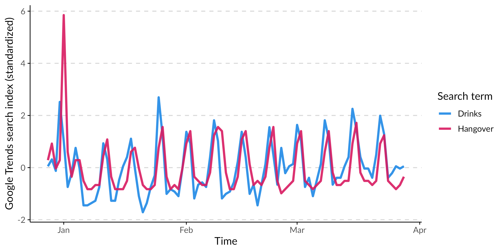
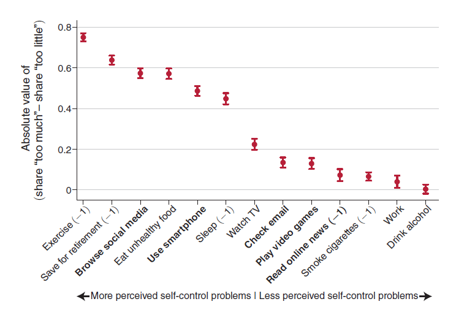
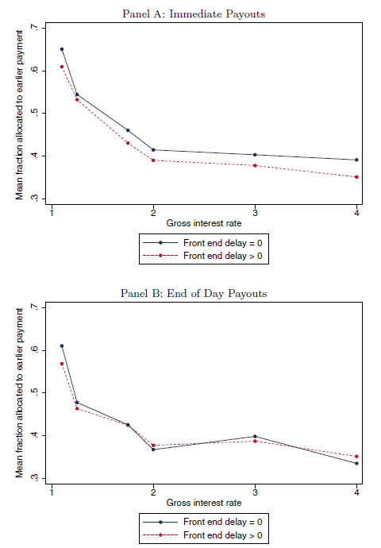
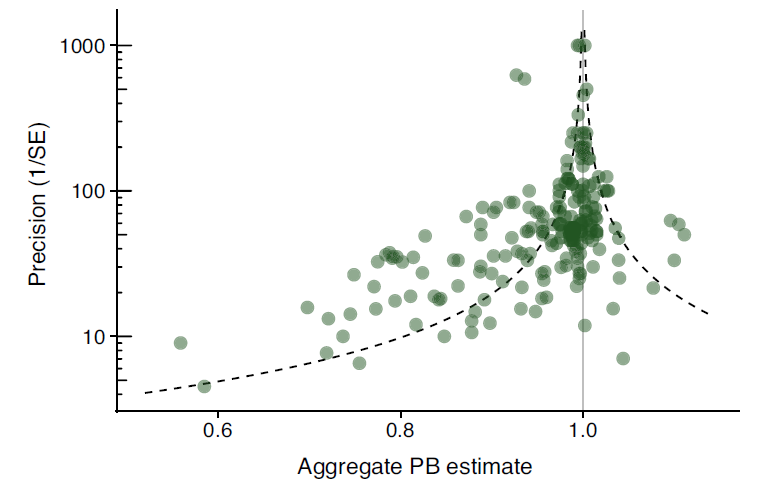
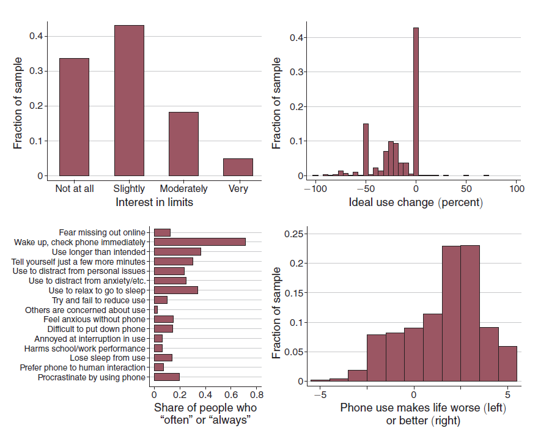
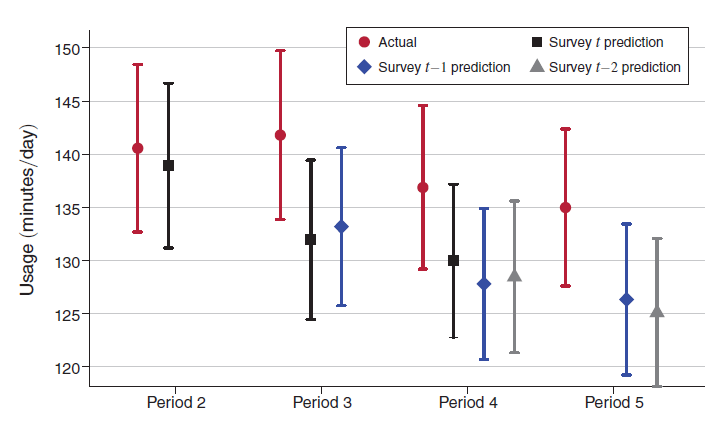

Exponential discounting, present bias


In Allcott et al. (AER, 2022) most students say they exercise too little, waste time online, eat junk, save too little, etc.
\[ \small U_t(u) = \sum_{k=0}^{T-t}D(k)u_{t+k} = D(0) + D(1)u_{t+1}+\dots + D(T-t)u_T. \]
Assumption. The discount factor is exponential if \(D(k) = \delta^k,\) where \(\delta\in(0,1]\). If \(\delta < 1,\) this means that the agent weights the future less strongly than the present.
Assumption. The discount factor is exponential if \(D(k) = \delta^k,\) where \(\delta\in(0,1]\). If \(\delta < 1,\) this means that the agent weights the future less strongly than the present.
“It is completely arbitrary to assume that the individual behaves as to maximize an integral envisaged in [the exponential discounting model]” — Paul Samuelson (1937), in the article introducing the concept.
For all \(t\) and \(\tau\!>\!t\) an agent is time-consistent if
\(\boldsymbol{z} \succ_t \boldsymbol{z}' \iff \boldsymbol{z} \succ_\tau \boldsymbol{z}'\)
whenever \(\boldsymbol{z}_t=\boldsymbol{z}_t'\) for \(t<\tau\).
For all \(t\) and \(\tau\!>\!t\) an agent is time-consistent if
\(\boldsymbol{z} \succ_t \boldsymbol{z}' \iff \boldsymbol{z} \succ_\tau \boldsymbol{z}'\)
whenever \(\boldsymbol{z}_t=\boldsymbol{z}_t'\) for \(t<\tau\).
Proposition. An agent with utility function \(U_t(u) = \sum_{k=0}^{T-t}D(k)u_{t+k}\) is time-consistent if and only if the discount function is exponential.
(proof on board)
Thaler asks participants the following question:
How much would you require in
[one month / one year / ten years]to make you indifferent to receiving $15 now?
| 1 mo | 1 yr | 10 yrs | |
|---|---|---|---|
| Median answer | $20 | $50 | $100 |
| Implied monthly \(\delta\) | .75 | .90 | .98 |
\[ U_{t}^{\beta,\delta}(\mathbf u)=u_t+\beta\sum_{k=1}^{T-t}\delta^{\,k}u_{t+k}, \qquad 0<\beta\le1. \]
With \(\beta=0.8\) Thaler’s answers give roughly constant \(\delta\!\approx\!.94\).
Modern tests of time discounting often test for stationarity. Denote an option generating outcome \(z\) in \(t\) as \((z,t)\). Then:
Stationarity: \(\succ\) depends only on delay difference, not on calendar date
\[
\small
(z,t{+}\Delta_1)\sim_t(z',t{+}\Delta_2)
\;\;\Longrightarrow\;\;
(z,t'{+}\Delta_1)\sim_{t'}(z',t'{+}\Delta_2),
\] for \(\Delta_1, \Delta_2 > 0.\)
Stationarity: \(\succ\) depends only on delay difference, not on calendar date
\[
\small
(z,t{+}\Delta_1)\sim_t(z',t{+}\Delta_2)
\;\;\Longrightarrow\;\;
(z,t'{+}\Delta_1)\sim_{t'}(z',t'{+}\Delta_2),
\] for \(\Delta_1, \Delta_2 > 0.\)

Imai, Rutter, Camerer (EJ, 2021) provide a meta study of CBT experiments. Each dot below is a \(\beta\)-estimate coming from a separate study.
Alcott, Gentzkow, Song (AER 2022) document that individuals would like to limit their social media use, so they are generally aware of the problem.

But individuals systematically underestimate their future use. This points to only partial sophistication.
